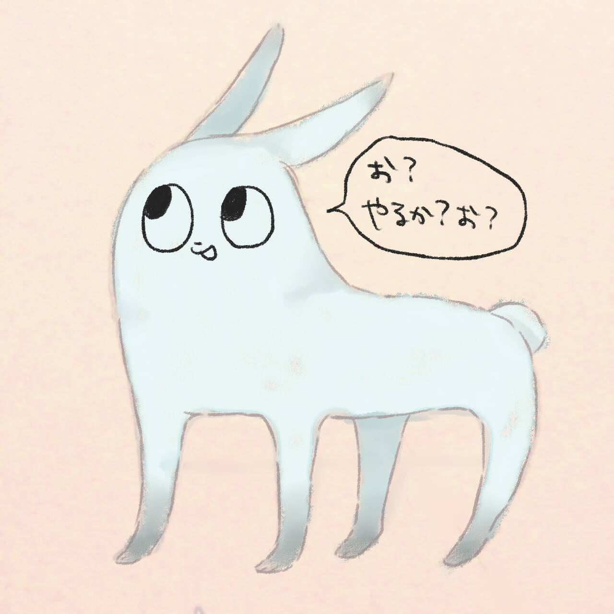

自作SSGの紹介
自作SSGを作成中...
自作SSGとは
自作のPEGパーザToyPEGを使った標準ライブラリのみに依存した軽量SSGです。
この記事もToyPEGでパースしたマークダウンをHTMLに変換してレンダリングしています。
強調 や イタリック も使えます。[1]
普通の箇条書きも使えます。
- foo
- bar
- baz
コードブロック
コードブロックも使えます。ただし、シンタックスハイライトはJSのライブラリです。
#[derive(Serialize)]
struct PostContext<'a> {
title: &'a str,
published_at: &'a str,
tags: &'a str,
content: String, // 変換後のHTML
rel_path: &'a str,
}
impl PostEntry {
// 自身の参照と、外部から与えられるHTML・相対パスを組み合わせて Context 用構造体を作る
fn to_context<'a>(&'a self, html_content: String, rel_path: &'a str) -> PostContext<'a> {
PostContext {
title: &self.meta.title,
published_at: &self.meta.published_at,
tags: &self.meta.tags,
content: html_content,
rel_path,
}
}
}
画像
画像も貼れます。

- ここは脚注です。 ↩